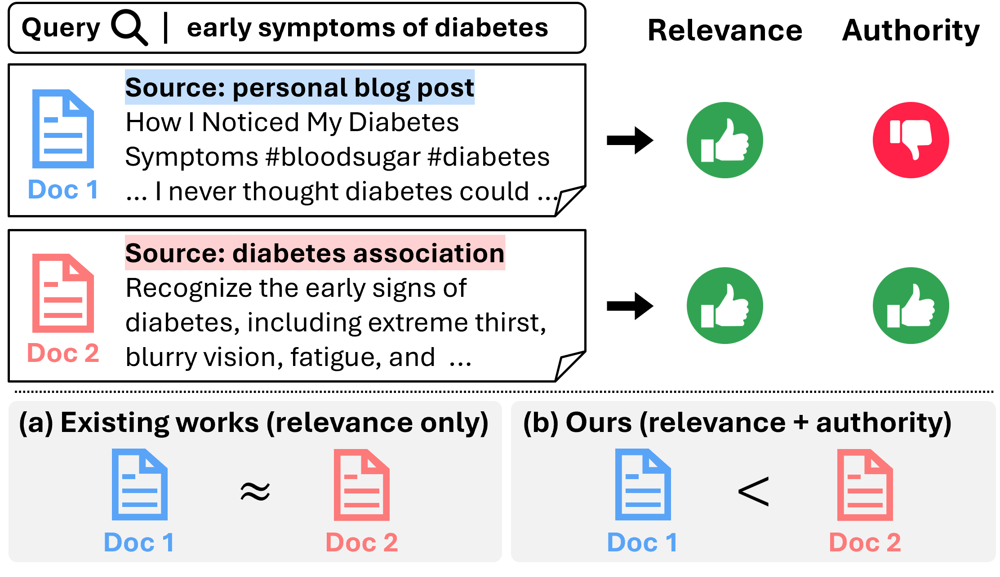
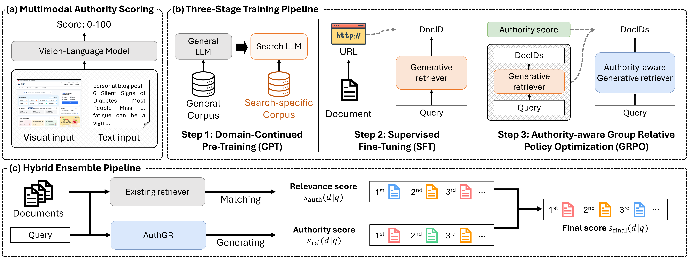
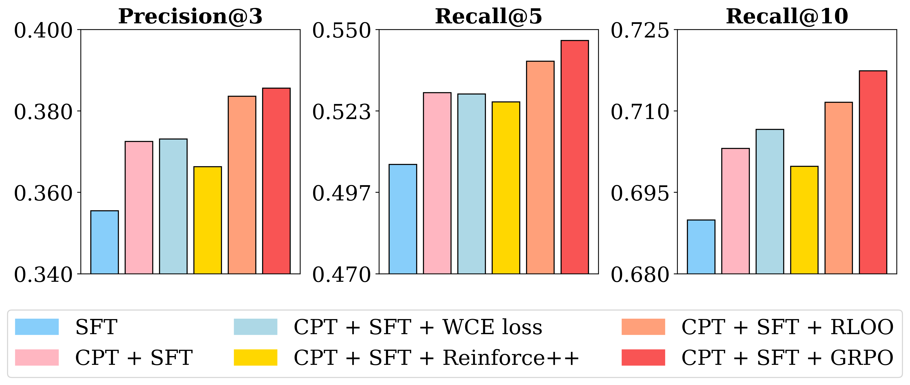

目录 · 9 节
1它到底在解决什么问题？2整体流程：打分、三阶段训练、上线融合3权威分：为什么要看截图4三阶段训练：每一步为什么需要5上线：不替换，只加分6实验：哪些结论站得住7我认为它的局限8一个推荐/搜索团队可以怎么试9一句话结论和评价做网页搜索、医疗金融这类高风险垂类搜索，或者正在试生成式检索的团队值得读，但要带着问题读。它回答了一个很实际的问题：生成式检索模型只学“query 和文档相关”，会把一篇主题相近的个人博客和官方机构网站排得一样高，怎么让它偏向可信的来源。核心思想一句话：先让视觉语言模型（VLM）看网站截图和文字，给每个网站打 0 到 100 的权威分；再用这个分数当 GRPO 的奖励，训练一个直接生成网站域名的 3B 模型；上线时不替换原有排序，只给它生成的网站加分。离线 P@3 从只做 SFT 的 0.3555 提到 0.3856，和 14B 的 SFT 模型（0.3856 对 0.3854）打平；盲评打分从 3.06 提到 3.41；线上 A/B 里点击类指标涨了 21% 到 23%。我认为方法的分工设计值得借鉴，但线上数字的口径和几处统计不一致，需要打折看。
它到底在解决什么问题？
生成式检索（GenIR）不做向量匹配，而是让语言模型读 query 后直接生成文档标识（DocID），模型生成的就是检索结果。现有工作几乎都只优化相关性。在健康、金融这种领域，这不够。
举一个示意例子。用户搜“糖尿病早期症状”，候选来源有三个：
| 候选来源（示意） | 和 query 的主题相关度 | 来源可信度 |
|---|---|---|
| 个人博客“糖尿病的 6 个沉默信号” | 高 | 低，没有出处，页面满是广告 |
| 糖尿病学会官网的科普页 | 高 | 高 |
| 某三甲医院内分泌科的患者手册 | 中高 | 高 |
只看相关度，个人博客可能排第一，因为标题几乎就是 query。论文图 1 就是这个场景。作者要做的，是让模型在相关度差不多时优先生成后两个来源。

这里要先说清一个关键设定：DocID 用的是主机级 URL，也就是网站域名。比如生成“plus.gov.kr”，而不是某个具体页面的完整地址。作者的理由是域名噪声小，又直接暴露来源身份，便于学权威性。代价是模型推荐的是“去哪个网站找”，不是“看哪一页”，离线评测的标准答案也是在域名粒度上对的。
整体流程：打分、三阶段训练、上线融合
论文图 2 给出了全貌，分三块：

| 阶段 | 输入 | 产出 | 负责什么 |
|---|---|---|---|
| 权威打分 | 网站截图 + 标题、正文、URL | 每个网站一个 0 到 100 的分数和一句理由 | 定义什么叫权威 |
| CPT（Continued Pre-Training，领域继续预训练） | 985 万条“query + URL + 标题 + 正文”拼接文本 | 熟悉搜索数据的语言模型 | 学 URL 和内容的对应关系 |
| SFT | 395 万条过滤后的 query 和点击网站对 | 能按 query 生成相关域名的模型 | 学相关性 |
| GRPO | 13,814 条高频 query，权威分做奖励 | 偏向高权威域名的模型 | 学权威性 |
| 混合融合 | 现有检索器的结果 + 模型生成的 10 个域名 | 最终排序 | 不丢召回，只做加分 |
关键分工是：相关性靠 SFT 和现有检索器保住，权威性只在 GRPO 和融合加分里注入。下面拆开讲。
权威分：为什么要看截图
为什么不直接用 PageRank 这类链接信号？作者认为链接只反映了一部分可信度，人判断一个网站靠不靠谱，会同时看内容、版面和广告多少。推广类网站很会模仿权威的措辞，只看文字容易被骗；看截图能发现满屏弹窗、广告挤占正文这类特征。
具体做法是给 VLM 一份打分细则，从专业性、官方程度、公共利益三个维度打分，另外检查商业意图和有害内容。这几项不是分别打分再加权，而是细则里的判断依据：VLM 读完后直接输出一个整数总分，外加一两句理由。分数分成高、中、低三档，赌博、色情、垃圾站直接记 0，所以分数主要用来区分可信站点和推广站点。细则里还明确写了“截图优先于其他信号”。
这一步可信吗？作者在 4 万个网站上请人工标注“这个网站是否体现专业性”，人工给的是“是/否”，VLM 给的是 0 到 100 的分数，所以作者把 VLM 打出高分的网站算作“是”，再看两边是否一致。我理解这里的高分就是细则里 80 分以上的高质量档。只给文字时一致率约 81%，只给截图约 92%，两者都给是 97%。对二值人工标签算 ROC-AUC 是 0.915。论文附录还给了两个例子：一个小经销商的网站挂着大厂的 logo，只看截图会被判成官网，加上文字后才判对；一个行业协会的官网页面内容很少，只看截图会被判成低权威。这说明截图和文字是互补的，各自都会犯对方能纠正的错。
运维成本也交代了：全库每季度重打一次分，每 10 万个网站约 3,000 万 token，两次全量之间每周再对内容有变化的网站做小规模增量更新。
三阶段训练：每一步为什么需要
CPT：先让模型认识 URL
通用大模型把 URL 当成一串随机字符。CPT（领域继续预训练）阶段用标准的下一个 token 预测，在“query + URL + 标题 + 正文”拼起来的搜索日志上继续训练，让模型学到“.gov 结尾的域名多半是政府机构”这类关联。消融显示，3B 模型只做 SFT 时 P@3 是 0.3555，先做 CPT 再做 SFT 到 0.3725，提升约 4.8%，是三个阶段里单步贡献最大的。
SFT：学会按 query 生成相关域名
SFT 用真实点击日志，目标是给定 query 生成被点击网站的域名。点击日志有位置偏差和误点，作者做了两层过滤：去掉每周搜索次数不超过 50 的长尾 query，再用一个辅助排序模型删掉 query 和网站明显不匹配的样本，另外按规则排除个人博客等低权威平台。原始约 1,100 万条被删掉约 63%，剩 395 万条，P@3 反而从 0.3194 提到 0.3725。这说明在点击日志上做生成式检索，数据质量比数量重要得多。
GRPO：用权威分当奖励
为什么 SFT 之后还要一步？SFT 对所有被点击的网站一视同仁，学不到“同样相关时谁更可信”。最直接的替代是按权威分给交叉熵加权（论文叫 WCE），但它是逐条样本学习，不比较同一个 query 下的候选。GRPO 是分组比较：对一个 query，用当前模型采样 G 个候选域名，每个候选的奖励就是它的权威分，再在组内标准化成优势值：
是第 个候选域名的权威分， 大于 0 表示比组内平均更权威，模型会提高生成它的概率。手算一个示意：一组 3 个候选，权威分 90、60、30，均值 60，标准差约 24.5，优势值约 +1.22、0、−1.22。论文实际用的组大小 。
这里有个关键细节：奖励里只有权威分，没有相关性。一个和 query 无关的政府网站，只要被采样到，也会拿到正优势。相关性只能靠两样东西保住：候选是从 SFT 学过相关性的模型里采样的，以及 KL 惩罚把模型拉在 SFT 模型附近。论文的超参数实验印证了这一点：KL 系数 从 0.01 调到 0.2，P@3 提升 10.6%，最优区间是 0.1 到 0.2。KL 约束太松，模型就会偏向“权威但不相关”的网站。
奖励形式也比较过：直接用原始分数（线性），比二值化（80 分以上记 1）、分五档、sigmoid 变换都好，P@3 分别是 0.3856、0.3820、0.3841、0.3833。差距很小，但方向一致，说明保留细粒度的分差有一点用。
上线：不替换，只加分
直接用新模型替换线上排序风险太大。作者的做法是现有检索器照常给每个文档算相关性分 ，AuthGR 用 beam search（宽度 10）生成 10 个域名，排第几位就给多少加分：
是生成的域名数， 是该域名在生成结果里的名次， 表示文档属于生成的域名集合时才加分，。手算：排第 1 的域名加 0.6，排第 5 的加 0.36，排第 10 的加 0.06，没被生成的不加分。这个设计的好处是召回完全由原系统负责，AuthGR 只调顺序。0.6 的加分能挪动多少名次，取决于原系统相关分的尺度：如果候选之间的相关分差普遍小于 0.6，AuthGR 的名次几乎就决定了最终顺序。
实验：哪些结论站得住
离线评测用 3,000 条专家 query，每条 query 取 30 个候选，人工标出最相关的 3 个，在域名粒度上算 P@3 和 Recall（论文表 1，节选）：
| 模型 | 规模 | P@3 | R@5 | R@10 |
|---|---|---|---|---|
| GPT-4o（上下文学习，不微调） | - | 0.1700 | 0.2348 | 0.3170 |
| LLaMA 3.1（上下文学习） | 405B | 0.1413 | 0.1974 | 0.2590 |
| LLaMA 3.2（SFT） | 3B | 0.3602 | 0.5108 | 0.6892 |
| HyperCLOVAX（SFT） | 14B | 0.3854 | 0.5508 | 0.7289 |
| AuthGR，只做 SFT | 3B | 0.3555 | 0.5058 | 0.6899 |
| AuthGR，CPT + SFT | 3B | 0.3725 | 0.5293 | 0.7031 |
| AuthGR，三阶段完整版 | 3B | 0.3856 | 0.5464 | 0.7175 |
不微调的大模型全军覆没，最好的 GPT-4o P@3 也只有 0.17，因为它们不知道这个搜索引擎里有哪些网站。微调后的 3B 模型大约是它的两倍多。AuthGR 和 14B 模型在 P@3 上打平，但 R@5 和 R@10 都更低。论文说“3B 追平 14B”，严格讲只在 P@3 上成立。

排序优化方法的对比说明分组比较是关键：GRPO 在 CPT + SFT 之上 P@3 提升 3.5%，RLOO（留一法基线的分组策略梯度）提升 3.0%，而 WCE（按权威分加权交叉熵）只有 0.2%，Reinforce++（REINFORCE 的改进版，不用价值网络，拿整个 batch 的平均奖励当基线）下降 1.7%。区别在于基线：GRPO 和 RLOO 拿同一 query 的其他候选当参照，WCE 和 Reinforce++ 不在同一 query 的候选之间比较。权威分确实变了：生成结果的平均权威分从 87.2 提到 90.4，0 到 60 分的低权威结果从 118 个减到 106 个。
人工盲评在 500 条 query 上对比线上系统和加了 AuthGR 的系统，只看第 1 条结果，按 1 到 5 分打分，同时考虑信息是否够用和来源是否可信，5 分是又相关又来自可信来源。平均分从 3.06 到 3.41，提升 11.4%，说明加分融合确实把更可信、同样相关的结果推到了第一位。
线上 A/B 在 2025 年年中跑了几天（论文表 3）：
| 指标 | 对照组 | 实验组 |
|---|---|---|
| 有点击的页面数 | +0.08% | +21.36% |
| 文档总点击 | +0.22% | +22.07% |
| 第 1 条结果 CTR | +0.87% | +22.83% |
| 前 3 条结果 CTR | +0.81% | +22.68% |
我认为它的局限
第一，线上数字的口径没讲清。对照组一栏本身也有 +0.08% 到 +0.87% 的变化，说明两栏都是相对某个未说明的基期在算，不是实验组对对照组的提升。五个指标都整齐地涨了 21% 到 23%，对一次只调整加分的改动来说幅度很大；实验覆盖的是全部流量还是只有高风险垂类 query，也会改变这个幅度的含义。
第二，几处统计和主表对不上。按表 1，3B 完整版对 14B 的 P@3 几乎相同（0.3856 对 0.3854），R@5 还更低；附录的显著性表却写成 3B 的 P@3 高出 2.31%，而且用的是 3,041 条 query，不是 3,000 条。正文和附录对三阶段总提升的说法也不一致。这意味着“显著超过 14B”这个结论不能直接采信。
第三，奖励只看网站，不看页面和相关性。权威分是网站级别的，同一个政府网站上过期的通知和最新的指南拿同样的分；奖励里又不含相关性，全靠 KL 约束兜底。此外推理成本不低：附录给出 3B 模型单次平均延迟 1,225 毫秒，比 14B 的 2,881 毫秒快，但放进实时链路仍然偏慢，更现实的做法可能是只对高频 query 离线预计算（这是我的推测）。
一个推荐/搜索团队可以怎么试
- 先只做权威打分。选一个高风险垂类，用 VLM 对头部几万个网站按截图加文字打分，抽样和人工标注对比；一致率明显低于论文的 97%，后面的步骤就没有意义。
- 不训生成模型，先把权威分当排序特征或加分项接进现有排序，看人工评测里第 1 条结果的质量有没有提升。这一步能单独回答“权威信号本身值不值钱”。
- 有效再训生成式模型，按 CPT、SFT、GRPO 的顺序。GRPO 阶段重点扫 KL 系数，同时监控相关性指标，防止模型偏向权威但不相关的网站。
- 上线 A/B 时，同时报告实验组相对对照组的差值和置信区间，并按垂类拆开看，避免出现论文里那种口径不清的数字。
一句话结论和评价
这篇最可借鉴的是分工：让相关性留在原系统和 SFT 里，把权威性作为一个独立、可替换的信号，只在分组比较和最终加分时注入。
| 维度 | 评价 |
|---|---|
| 问题重要性 | 高。健康、金融搜索里来源可信度直接影响用户安全 |
| 方法创新性 | 中。VLM 打分、GRPO、分数融合都是现成部件，新意在组合方式和用截图判断权威 |
| 实验证据 | 中低。有离线、盲评、线上三种评测，但线上口径不清，附录统计和主表对不上 |
| 工程成本 | 中高。8 张 A100 训练约 83 小时，全库每季度重打分，单次推理约 1.2 秒 |
| 是否值得尝试 | 值得试前两步。权威打分和加分融合便宜且独立，生成式模型部分可以晚点再上 |
| 适用场景 | 网页搜索、医疗金融等高风险垂类，以及需要按来源可信度排序的内容检索 |
读完这篇，你觉得
夜读鸮记下了，谢谢你的反馈。
点一下即可，无需登录；再点一次撤回。只统计匿名次数，不记录你是谁。
讨论
欢迎补充实验细节、复现经验或不同看法。需 GitHub 登录。
正在加载讨论…